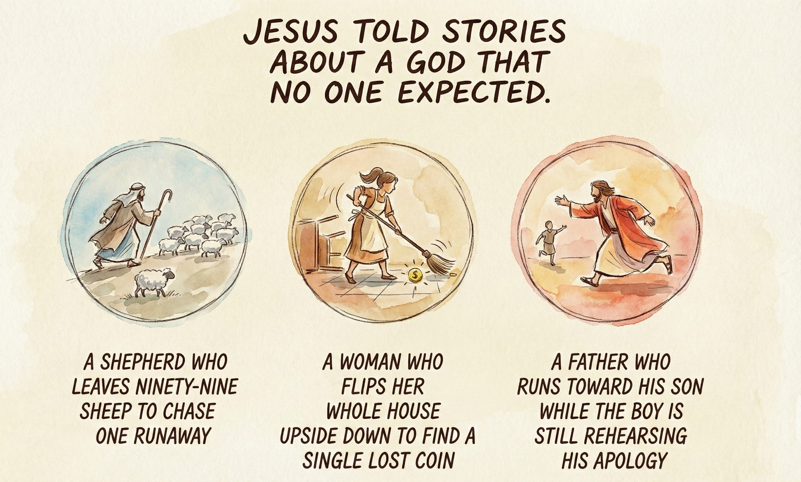
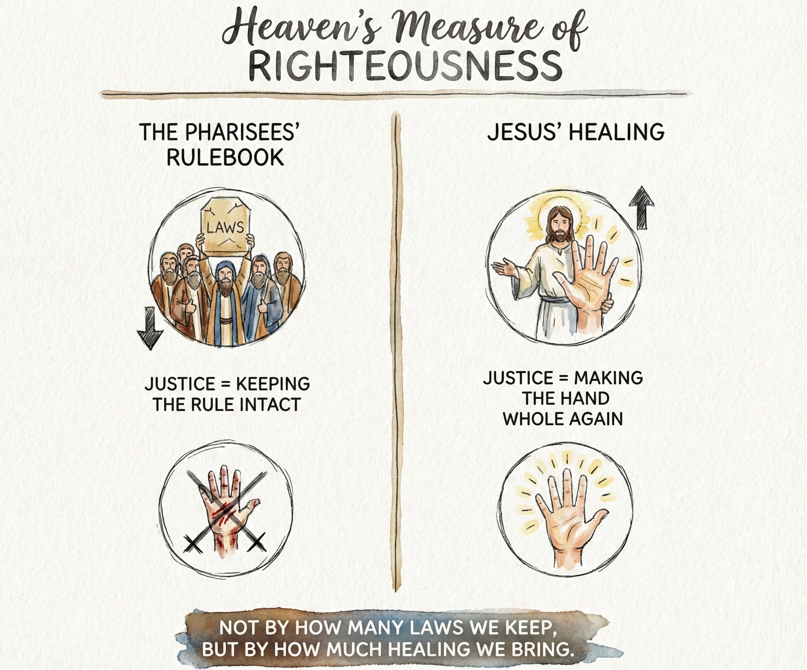
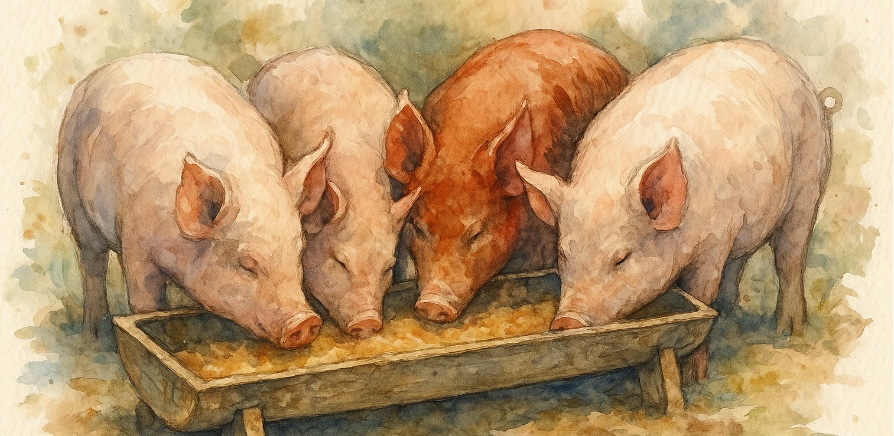
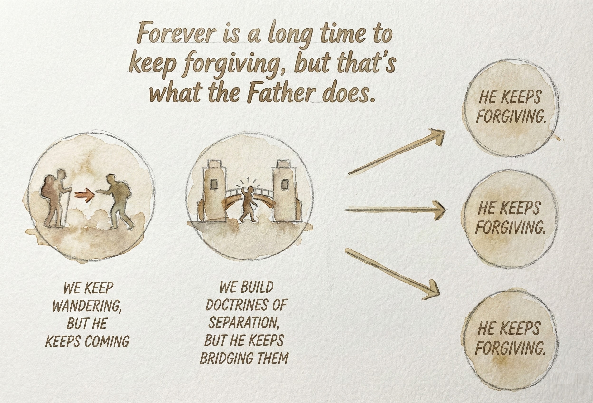

Chapter 6: The Father Who Never Stops Loving
When you take away hell, people panic.
They think you've just kicked the last leg out from under morality.
They ask, "If there's no eternal punishment, what's to stop people from doing whatever they want?"
The irony is that hell never stopped anyone from sinning.
It only taught them how to hide.
The only thing that ever transforms a person is love.
And not the kind of love that says, "I'll love you if…"
I mean the kind that says, "Even if you walk straight into darkness, I will come find you."
That kind of love ruins you for religion forever.
The Father Jesus Revealed
Jesus told stories about a God that no one expected.
A shepherd who leaves ninety-nine sheep to chase one runaway.
A woman who flips her whole house upside down to find a single lost coin.
A father who runs toward his son while the boy is still rehearsing his apology.
Every parable was another nail in the coffin of the punishing God.
These weren't tales of wrath delayed. They were portraits of a love that simply refuses to give up.
Notice the pattern: someone is lost, someone searches, and joy erupts when they are found.
There is no scene where the shepherd decides, "That one wandered too far. Let it burn."
There is no line where the father crosses his arms and says, "Come back properly next time."
In Jesus' stories, love never stops moving.
It searches. It runs. It rejoices.
That is what divine justice looks like.
The Real Meaning of Justice
We have been taught to see justice as punishment.
If someone does wrong, balance it with pain.
But the Father's version of justice is restoration.
He does not balance the scales by hurting the offender; He repairs the imbalance by healing both sides.
When Jesus healed the man with the withered hand on the Sabbath, the Pharisees fumed because He broke their rulebook.
They thought justice was keeping the rule intact.
Jesus thought justice was making the hand whole again.
That is how heaven measures righteousness.
Not by how many laws we keep, but by how much healing we bring.
If you have ever watched someone forgive a betrayal that could have ruined them, you have seen divine justice in motion.
It is the most powerful force in the universe, because it converts pain into compassion.
The Father Who Can't Stop Running
When Jesus described the prodigal son's homecoming, He shattered the last illusion about God's limits.
The father doesn't wait for his son to crawl back and grovel.
He sees him on the horizon and sprints.
He throws his arms around the smell of pigs and failure.
He doesn't even let the boy finish his confession.
That image still makes the religious mind uncomfortable.
Because in that scene, the father is the one who loses dignity, not the son.
He bears the scandal so his child can bear the hug.
That is how love works.
It breaks its own rules to save the relationship.
If you can imagine a God who runs like that, you no longer need hell to keep people moral.
They'll chase goodness because they've been caught by grace.
The Love That Outlasts Our Running
The most repeated statement in the Bible is not about judgment; it is about mercy that endures forever.
Forever is a long time to keep forgiving, but apparently that's what the Father does.
We keep wandering, but He keeps coming.
We build doctrines of separation, but He keeps bridging them.
We light our own little hells of guilt and resentment, and He walks right into the fire to sit with us until we can see His face again.
Sometimes I picture Him like a parent sitting outside a locked bathroom door while a teenager cries inside.
He does not shout, "Come out or else."
He waits, listening, ready to hold them the second the door opens.
That is not weakness. That is what love looks like when it grows up.
The Scandal of Unconditional Love
The idea that God loves everyone equally sounds lovely in theory until you apply it to the people we cannot stand.
Serial killers. Dictators. Abusers.
We want a cutoff line.
Surely love has a limit.
But Jesus kept crossing lines until there were none left.
He ate with tax collectors, healed servants of Roman soldiers, pardoned prostitutes, and forgave His executioners.
Every boundary we try to rebuild, He steps over with a smile.
Does that mean actions have no consequences?
Of course not. Love lets us taste the pain of our choices, but never to destroy us.
Fire refines; it does not erase.
If punishment could change the heart, the world would already be perfect.
Only love transforms because only love reaches the part of us that fear cannot touch.
Reclaiming the Word "Salvation"
Salvation was never about escaping a location called hell.
It was about awakening to the truth that you were never truly separated.
When Jesus healed someone, He often said, "Your faith has saved you."
No contract. No courtroom. No conditions.
Saved meant made whole.
Restored to sanity.
Reconnected to love.
When the church replaced salvation with evacuation, it lost the plot.
Jesus didn't come to airlift souls to safety.
He came to reveal that safety was already within them, waiting to be believed.
The Father's goal has never been to sort humanity into winners and losers.
It is to restore His children until there are no losers left.
What Happens When Fear Finally Dies
People often ask, "If hell isn't real, why bother following God at all?"
That question reveals how poisoned we have been by fear.
If you only behave because you are afraid of punishment, that isn't goodness ... it's self-preservation.
The Father invites us to something higher.
To do right because love compels it.
To forgive because that is what heaven's DNA looks like.
To stop sinning not out of terror but because it no longer fits who we are.
When fear finally dies, morality doesn't collapse.
It flourishes.

When you stop believing God is angry, you stop hiding.
And when you stop hiding, healing begins.
A Love That Will Have the Last Word
There is a story tucked in the Gospels where Jesus says, "If I be lifted up, I will draw all people to myself." [While I believe this line was inserted into the text, for today I'm going to take it at face value.]
Not some people. All.
Theologians tried to reduce it, but He meant what He said.
Love will keep drawing until the last lost heart is home.
It will cross every boundary, heal every wound, dissolve every hell we've built, and when the story ends, there will be no trophies, only family.
That is why I trust this Father.
He is relentless.
He is unreasonable.
And He is better than any sermon ever dared to promise.
Summary
If God is love, then He cannot stop being love, not even for a moment.
He does not transform into a tormentor on weekends.
He does not require fear to stay holy.
He simply keeps searching, keeps restoring, keeps running.
The Father Jesus revealed is not the warden of an afterlife prison.
He is the relentless rescuer who dives into every abyss until He finds you.
And when He does, there will be no fire left. Only light.